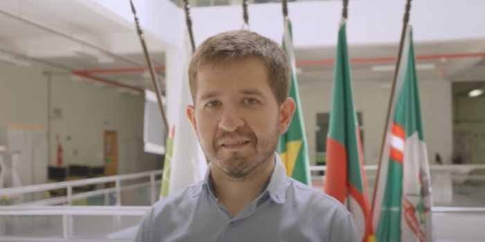

Inicio
Plan
Videos
Inscripción
TECNÓLOGO EN ANÁLISIS Y DESARROLLO DE SISTEMAS
Las oportunidades te esperan en el mundo de la tecnología
Unete a la cooperación internacional entre las más prestigiosas universidades de la región
. .
. .
. .
